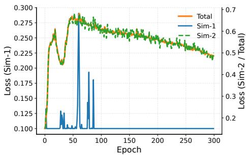

Figureure 1 · : JEPA and SiamJEPA architecturesFigure 1: JEPA and SiamJEPA architectures. Sim-1 is a loss function to align the Siamese encoders. The dashed line represents the StopGradient operator. In our implementation, the two masking sets are disjoint. Note that the SiamJEPA architecture is inspired by the brain-inspired representation learning called PhiNet and it can be regarded as a masked prediction variant of PhiNet is the SiamJEPA model.这张图概括 SiamJEPA 的整体方法流程。阅读时先看模块之间传递的训练信号，再看作者如何把目标拆成可优化的子问题。

(b) $\lambda _ { \mathrm { K L } } = 0 (b) $\lambda _ { \mathrm { K L } } = 0 . 0 1 .$ Figure 2: Learning curves for $\lambda _ { \mathrm { K L } } ~ = ~ 0 . 0 0 0 0 1$ and $\lambda _ { \mathrm { K L } } ~ = ~ 0 . 0 1$ . With a small regularization coefficient, the KL divergence between the representations produced by the two Siamese student encoders remains large. In contrast, with a larger regularization coefficient, the KL divergence quickly converges to the free-bit threshold (0.1 in our experiments). The linear probing performance follows a similar trend. The training loss starts at a value above 2, drops sharply during the initial stage of training, and then decreases more gradually as learning progresses.这张图/表用于判断 SiamJEPA 的实验收益来自哪里。重点看替换、消融或跨模型设置下趋势是否一致，而不是只看单个最高分。